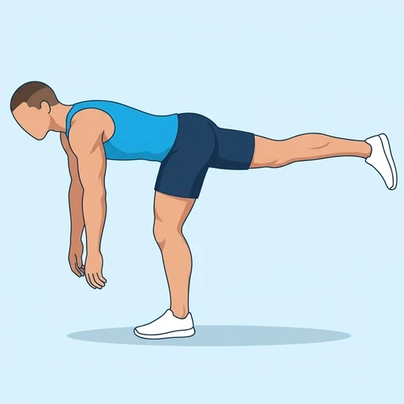

Single Leg RDL Hold
A balance hold at the bottom of a single-leg Romanian deadlift: standing on one leg, the torso is hinged forward and the other leg extends back in line with the body. It trains the hamstrings, glutes and trunk while challenging balance.
Upper legs · Bodyweight · Intermediate

Muscles worked by the Single Leg RDL Hold
Primary
Secondary
Also called: glute, glutes, gluteus maximus, buttocks, butt, hamstring.
Equipment
No equipment — this is a bodyweight exercise.
How to do the Single Leg RDL Hold
- Stand on one leg with a slight bend in the knee and the arms hanging in front of you.
- Hinge at the hip, sending the free leg straight back as the torso tips forward.
- Keep the back flat and the hips square to the floor.
- Stop when the torso and the free leg are roughly parallel to the floor and hold the position.
- Return to standing under control, then switch legs.
Form tips
- Think of a seesaw: the torso and the free leg move together.
- Keep the hips level; do not let the free hip rotate upward.
- Fix your gaze on a point on the floor ahead to help your balance.
At a glance
| Body part | Upper legs |
|---|---|
| Category | Strength |
| Force type | Static |
| Mechanic | Compound |
| Difficulty | Intermediate |
| Equipment | Bodyweight |
| Goals | Strength, Mobility |
| Tags | Leg day, Core, Knee safe, Shoulder safe, No axial load |
| MET | 5.0 (metabolic equivalent, for calorie estimates) |
| Unilateral | Yes |
| Bodyweight | Yes |
| Dataset id | single-leg-rdl-hold |
Single Leg RDL Hold in German & Spanish
| German | Einbeiniger Romanian-Deadlift-Halt |
|---|---|
| Spanish | Peso Muerto Rumano a Una Pierna Isométrico |
Descriptions, instructions and tips ship in all three languages in the JSON.
Related exercises
Exercise data (JSON)
The record below is exactly what exercises.json ships for this exercise — names, descriptions, instructions and tips in English, German and Spanish.
{
"id": "single-leg-rdl-hold",
"name_en": "Single Leg RDL Hold",
"name_de": "Einbeiniger Romanian-Deadlift-Halt",
"name_es": "Peso Muerto Rumano a Una Pierna Isométrico",
"description_en": "A balance hold at the bottom of a single-leg Romanian deadlift: standing on one leg, the torso is hinged forward and the other leg extends back in line with the body. It trains the hamstrings, glutes and trunk while challenging balance.",
"description_de": "Ein Gleichgewichtshalt in der tiefsten Position des einbeinigen Romanian Deadlifts: Du stehst auf einem Bein, der Oberkörper ist nach vorn gekippt und das andere Bein streckt sich in Linie mit dem Körper nach hinten. Er trainiert Beinbeuger, Gesäß und Rumpf und fordert das Gleichgewicht.",
"description_es": "Un mantenimiento de equilibrio en la parte baja de un peso muerto rumano a una pierna: de pie sobre una pierna, el torso se inclina hacia delante y la otra pierna se extiende hacia atrás en línea con el cuerpo. Entrena los isquiotibiales, los glúteos y el tronco mientras desafía el equilibrio.",
"category": "strength",
"force_type": "static",
"mechanic": "compound",
"difficulty": "intermediate",
"body_part": "upper_legs",
"primary_muscles": [
"gluteus_maximus",
"hamstrings"
],
"secondary_muscles": [
"adductors",
"erector_spinae",
"gluteus_medius",
"obliques"
],
"goals": [
"strength",
"mobility"
],
"tags": [
"leg_day",
"core",
"knee_safe",
"shoulder_safe",
"no_axial_load"
],
"variation_group": "deadlift",
"is_unilateral": true,
"is_bodyweight": true,
"instructions_en": [
"Stand on one leg with a slight bend in the knee and the arms hanging in front of you.",
"Hinge at the hip, sending the free leg straight back as the torso tips forward.",
"Keep the back flat and the hips square to the floor.",
"Stop when the torso and the free leg are roughly parallel to the floor and hold the position.",
"Return to standing under control, then switch legs."
],
"instructions_de": [
"Steh auf einem Bein mit leicht gebeugtem Knie und lass die Arme vor dir hängen.",
"Beug dich aus der Hüfte und schick das freie Bein gerade nach hinten, während sich der Oberkörper nach vorn neigt.",
"Halte den Rücken flach und die Hüfte zum Boden ausgerichtet.",
"Stopp, wenn Oberkörper und freies Bein ungefähr parallel zum Boden sind, und halte die Position.",
"Komm kontrolliert zurück in den Stand und wechsle dann das Bein."
],
"instructions_es": [
"Colócate sobre una pierna con una ligera flexión de rodilla y los brazos colgando delante de ti.",
"Haz una bisagra de cadera, enviando la pierna libre recta hacia atrás mientras el torso se inclina hacia delante.",
"Mantén la espalda plana y la cadera cuadrada respecto al suelo.",
"Detente cuando el torso y la pierna libre queden aproximadamente paralelos al suelo y mantén la posición.",
"Vuelve a ponerte de pie de forma controlada y luego cambia de pierna."
],
"tips_en": [
"Think of a seesaw: the torso and the free leg move together.",
"Keep the hips level; do not let the free hip rotate upward.",
"Fix your gaze on a point on the floor ahead to help your balance."
],
"tips_de": [
"Denk an eine Wippe: Oberkörper und freies Bein bewegen sich gemeinsam.",
"Halte die Hüfte waagerecht; lass die freie Hüfte nicht nach oben aufdrehen.",
"Fixiere einen Punkt auf dem Boden vor dir, um das Gleichgewicht zu halten."
],
"tips_es": [
"Piensa en un balancín: el torso y la pierna libre se mueven juntos.",
"Mantén la cadera nivelada; no dejes que la cadera de la pierna libre rote hacia arriba.",
"Fija la mirada en un punto del suelo delante de ti para ayudar al equilibrio."
],
"met": 5.0,
"images": {
"flat": {
"main": "images/flat/single-leg-rdl-hold-main.webp"
}
}
}Fetch just this exercise
const { exercises } = await fetch(
"https://exercise-dataset.com/exercises.json"
).then(r => r.json());
const ex = exercises.find(e => e.id === "single-leg-rdl-hold");Free for personal and commercial in-app use with attribution (“Exercise data by RepDB”) — see the license and ready-made attribution snippets. Redistributing the data as a dataset or API is not permitted.